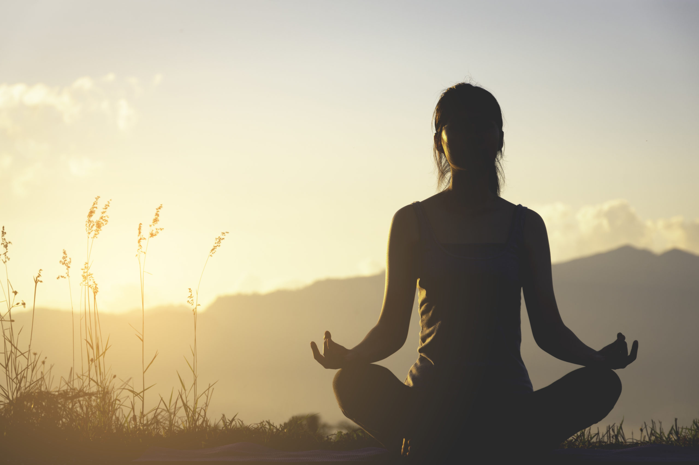

Meditation
 Book a session>>According to NHS, meditation is a mental practice that helps cultivate mindfulness, awareness, and inner peace. Individuals learn to observe their breath, sensations, or thoughts without judgment, thereby developing a deeper understanding of their inner workings. This practice can help reduce stress, anxiety, and depression while also improving emotional regulation and resilience. Additionally, meditation has been linked to better concentration, creativity, and overall well-being, making it a powerful tool for personal growth and self-discovery (‌NHS, 2022).
Stress Management
Book a session>>Stress management techniques are a variety of practices that help individuals reduce and cope with stressors in their lives. These techniques can include mindfulness meditation, deep breathing exercises, physical activities such as yoga or tai chi, journaling, and seeking social support. According to the National Center for Biotechnology Information (2024), incorporating these practices into daily routines can effectively lower stress levels, promote relaxation, and enhance one's ability to handle life's challenges. Over time, these techniques can improve mental and physical health, enhance sleep, and increase overall stress resilience (National Center for Biotechnology Information (2024).
Mindfulness
 Book a session>>
Book a session>>
Mindfulness involves actively focusing on the present moment with openness and acceptance. It is achievable through meditation and daily activities like eating or walking. Regular practice enhances self-awareness, reduces reactivity, and improves overall well-being. Research by Mindful Staff (2020) indicates its effectiveness in managing mental health and fostering a positive outlook (Mindful Staff, 2020).